Original method · Pass 1

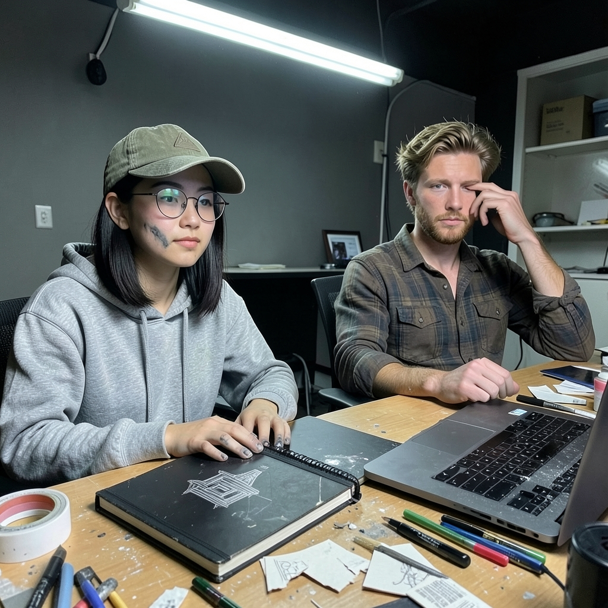
Maya · ArcFace 0.3119
CIS 5810 · DOCUMENTED PIPELINE ITERATION
A controlled comparison of the original method and one proposed change.
Each edited scene begins with the exact same first-pass image. Compare the original edit policy with the modified edit that resupplies Maya’s portrait. “Original pipeline” here means the fresh paired control; the older historical album is preserved separately below.
Reading the numbers: ArcFace and DINOv2 are separate cosine-similarity measures, not accuracy percentages. A higher score does not prove the correct person, object placement or ownership. Missing detections remain missing. Multiple detector candidates and background inside crops can affect object scores. Object targets come from the final scene, so missing first-pass objects may be intentionally introduced in pass 2.
Identical first pass for both methods. Only the later portrait input and its instruction change.

Maya · ArcFace 0.3119
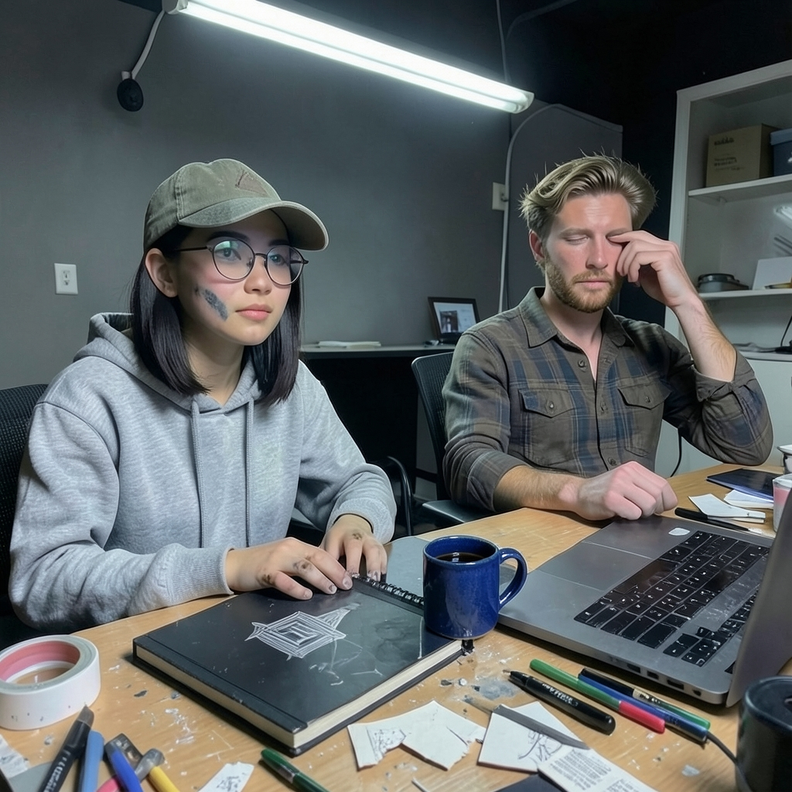
Maya · ArcFace 0.1554
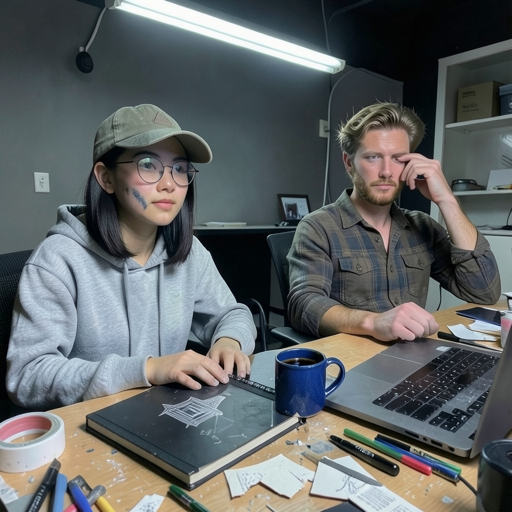
Maya · ArcFace 0.2496
| Target | Original method · Pass 1 | Original method · Pass 2 | Portrait retention · Pass 2 |
|---|---|---|---|
| Faded green cap | 0.39991 candidate(s) | 0.40621 candidate(s) | 0.40641 candidate(s) |
| Black hardcover sketchbook | 0.28113 candidate(s) | 0.24581 candidate(s) | 0.23771 candidate(s) |
| Chipped blue mug | 0.11533 candidate(s) | 0.48664 candidate(s) | 0.47823 candidate(s) |
| Target | Original method · Pass 1 | Original method · Pass 2 | Portrait retention · Pass 2 |
|---|---|---|---|
| Maya Chen | 0.3119face candidate 0 | 0.1554face candidate 0 | 0.2496face candidate 0 |
| Jonah | 0.3830face candidate 1 | 0.3315face candidate 1 | 0.2284face candidate 1 |
Identical first pass for both methods. Only the later portrait input and its instruction change. The mug moves from the requested radiator to Maya’s hand.
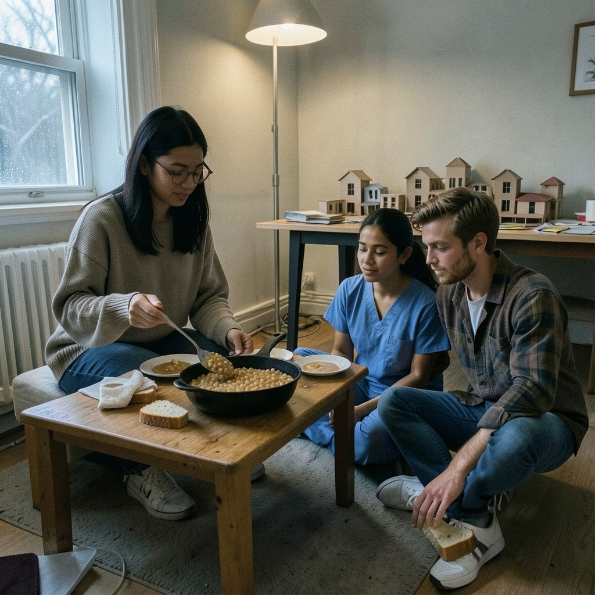
Maya · ArcFace 0.1973
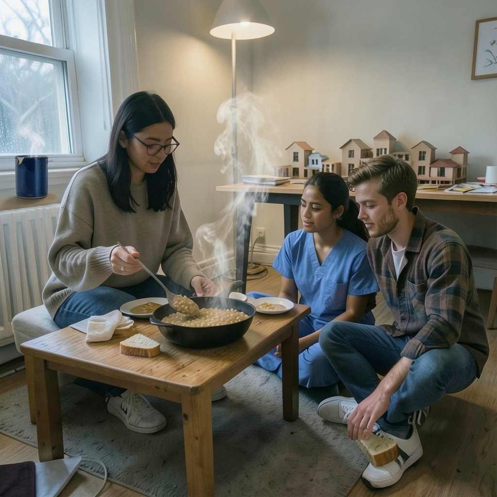
Maya · ArcFace 0.0910
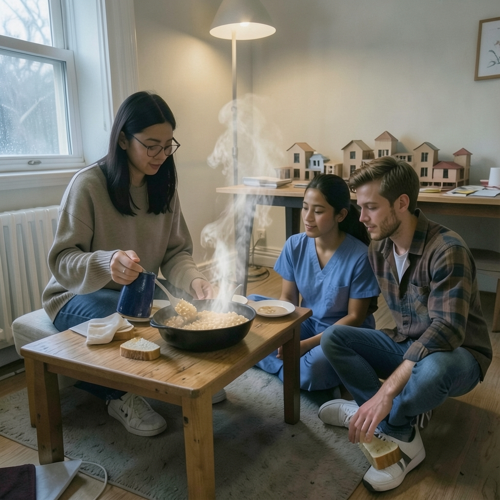
Maya · ArcFace 0.1743
| Target | Original method · Pass 1 | Original method · Pass 2 | Portrait retention · Pass 2 |
|---|---|---|---|
| Cast-iron skillet | 0.19081 candidate(s) | 0.25932 candidate(s) | 0.24151 candidate(s) |
| Chipped blue mug | 0.06201 candidate(s) | 0.51532 candidate(s) | 0.33171 candidate(s) |
| Target | Original method · Pass 1 | Original method · Pass 2 | Portrait retention · Pass 2 |
|---|---|---|---|
| Maya Chen | 0.1973face candidate 0 | 0.0910face candidate 0 | 0.1743face candidate 0 |
| Priya | 0.1984face candidate 1 | 0.1477face candidate 1 | 0.0686face candidate 1 |
| Jonah | 0.1959face candidate 2 | 0.1372face candidate 2 | 0.1929face candidate 2 |
Single-pass control. This same image is used by both methods; there is no second pass or treatment gain.
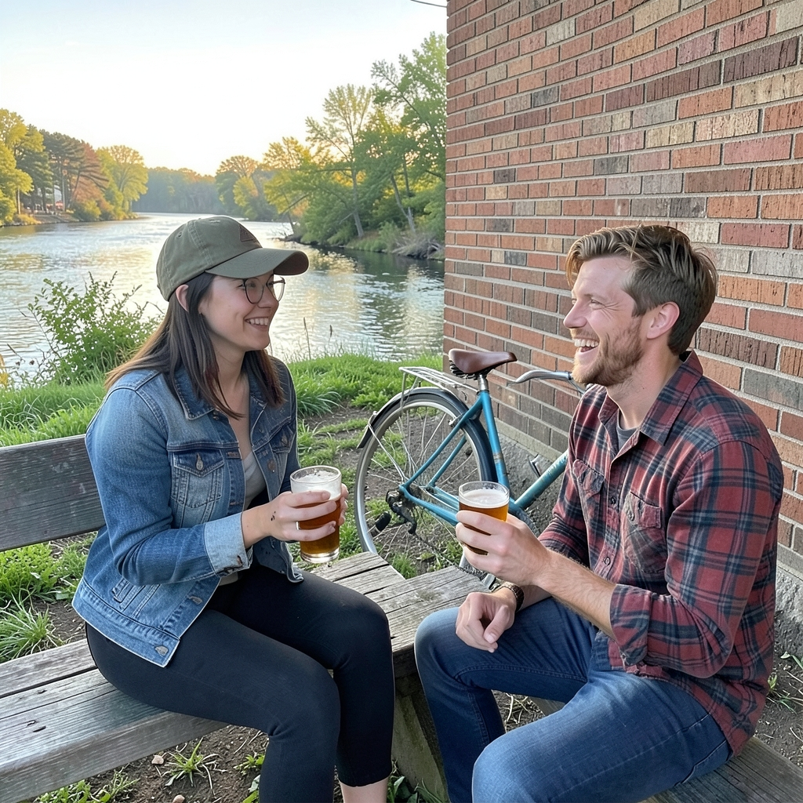
Maya · ArcFace 0.1611
| Target | Original method · Pass 1 |
|---|---|
| Blue Schwinn bicycle | 0.44881 candidate(s) |
| Faded green cap | 0.32591 candidate(s) |
| Target | Original method · Pass 1 |
|---|---|
| Maya Chen | 0.1611face candidate 0 |
| Jonah | 0.2827face candidate 1 |
Identical first pass for both methods. Only the later portrait input and its instruction change. Supporting-character face assignments also switch.
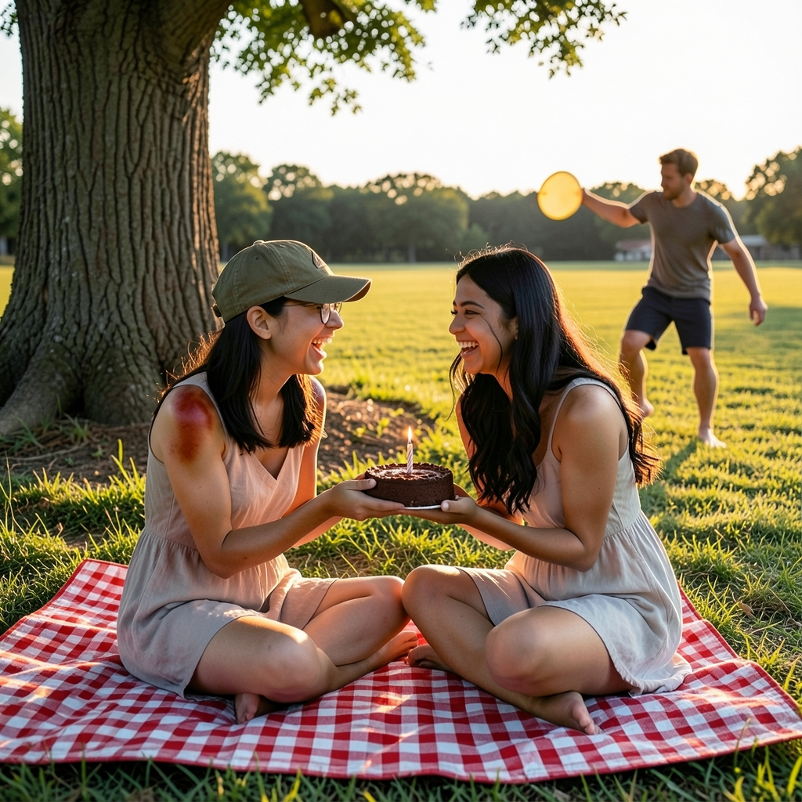
Maya · ArcFace 0.1002
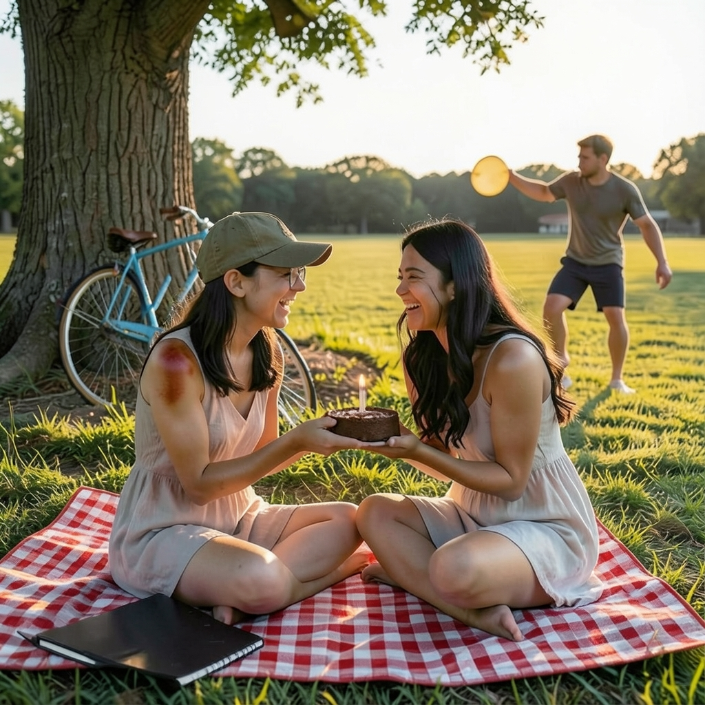
Maya · ArcFace 0.0726
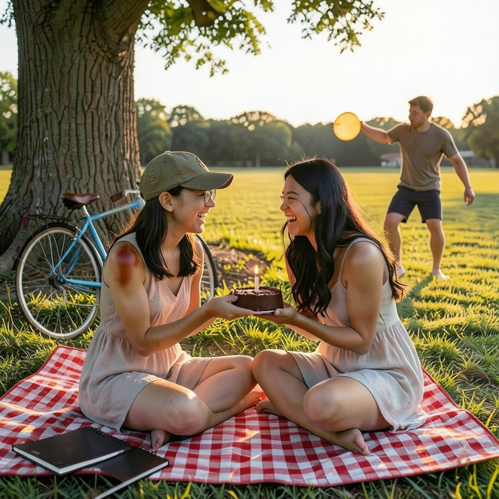
Maya · ArcFace 0.1106
| Target | Original method · Pass 1 | Original method · Pass 2 | Portrait retention · Pass 2 |
|---|---|---|---|
| Faded green cap | 0.45361 candidate(s) | 0.20501 candidate(s) | 0.31971 candidate(s) |
| Blue Schwinn bicycle | —0 candidate(s) | 0.16411 candidate(s) | 0.25501 candidate(s) |
| Black hardcover sketchbook | —0 candidate(s) | 0.26841 candidate(s) | 0.26291 candidate(s) |
| Target | Original method · Pass 1 | Original method · Pass 2 | Portrait retention · Pass 2 |
|---|---|---|---|
| Maya Chen | 0.1002face candidate 0 | 0.0726face candidate 0 | 0.1106face candidate 0 |
| Priya | 0.2182face candidate 1 | 0.1165face candidate 1 | 0.0435face candidate 2 |
| Jonah | 0.0814face candidate 2 | 0.0156face candidate 2 | 0.0471face candidate 1 |
Interpretation warning. Wrong-person warning: assigned Maya switches from the left cook to the center person. The left cook falls from 0.1284 to 0.0696 (post-hoc check).
Identical first pass for both methods. Only the later portrait input and its instruction change.
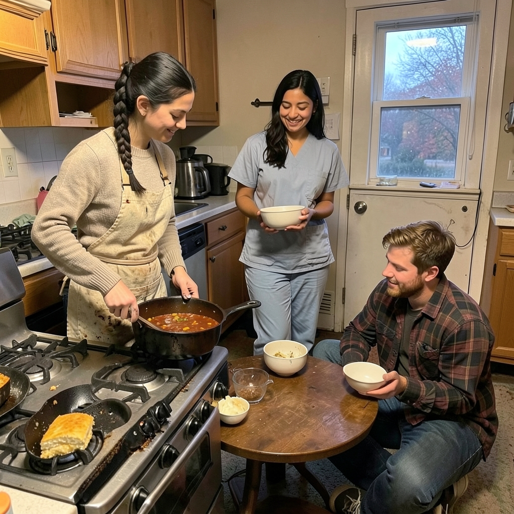
Maya · ArcFace 0.1277
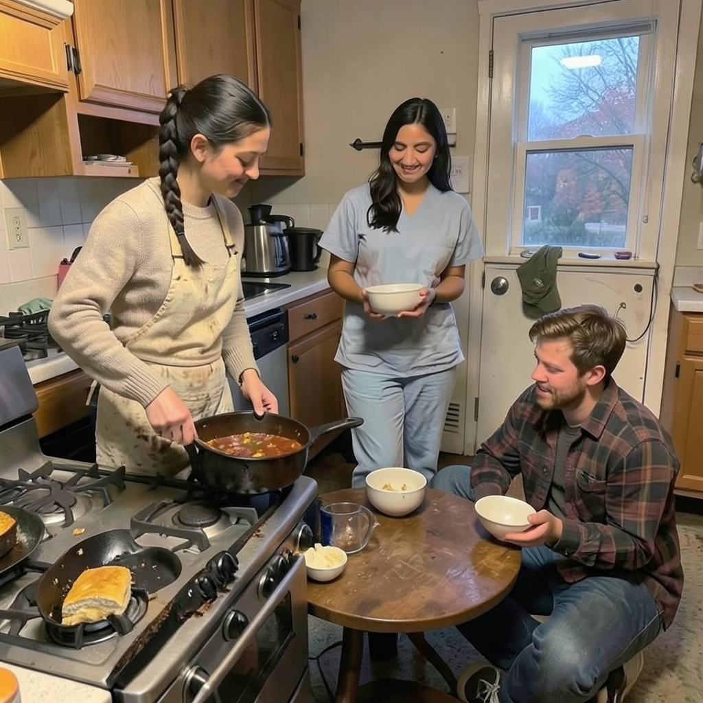
Maya · ArcFace 0.1284
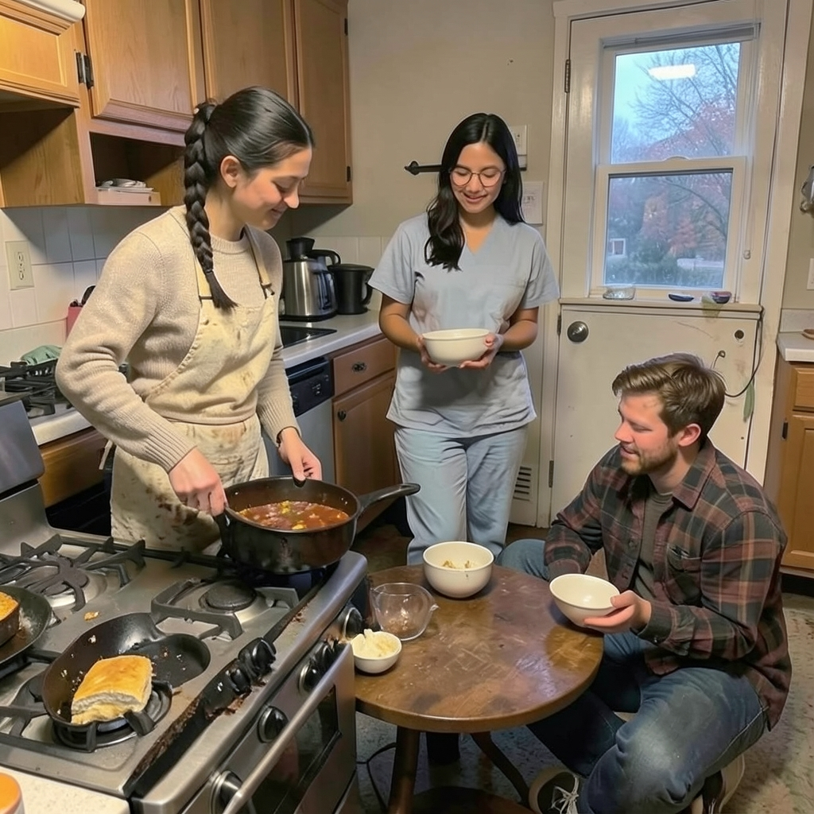
Maya · ArcFace 0.2039
| Target | Original method · Pass 1 | Original method · Pass 2 | Portrait retention · Pass 2 |
|---|---|---|---|
| Cast-iron skillet | 0.42981 candidate(s) | 0.35921 candidate(s) | 0.40301 candidate(s) |
| Chipped blue mug | 0.11902 candidate(s) | 0.15445 candidate(s) | 0.10874 candidate(s) |
| Faded green cap | —0 candidate(s) | —0 candidate(s) | —0 candidate(s) |
| Target | Original method · Pass 1 | Original method · Pass 2 | Portrait retention · Pass 2 |
|---|---|---|---|
| Maya Chen | 0.1277face candidate 0 | 0.1284face candidate 0 | 0.2039face candidate 1 |
| Priya | 0.2973face candidate 1 | 0.0825face candidate 1 | 0.0596face candidate 0 |
| Jonah | 0.1942face candidate 2 | -0.0049face candidate 2 | 0.0138face candidate 2 |
These are the earlier saved images. They are context, not the matched starting point for the new experiment: rerunning the provider with the same seeds did not reproduce them exactly.
Earlier pilot preserved unchanged. Its starting image differs from the fresh controlled experiment.
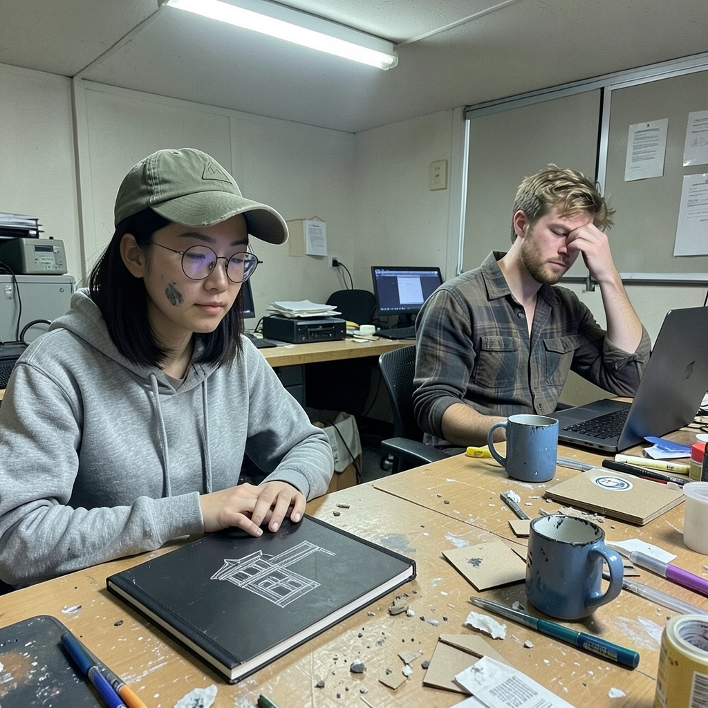
Maya · ArcFace 0.4456
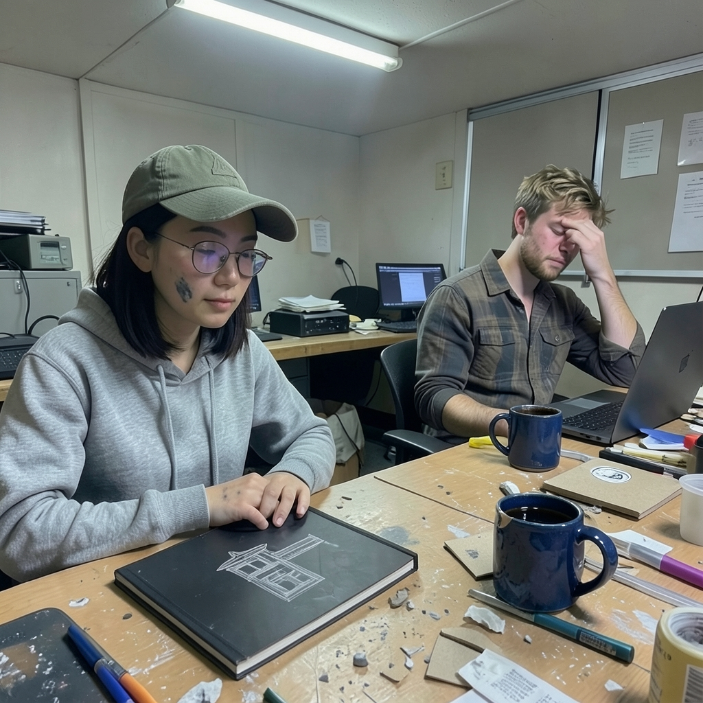
Maya · ArcFace 0.1453
| Target | Historical pilot · Pass 1 | Historical pilot · Pass 2 |
|---|---|---|
| Faded green cap | Not scored | 0.39691 candidate(s) |
| Black hardcover sketchbook | Not scored | 0.08941 candidate(s) |
| Chipped blue mug | Not scored | 0.48324 candidate(s) |
| Target | Historical pilot · Pass 1 | Historical pilot · Pass 2 |
|---|---|---|
| Maya Chen | 0.4456face candidate 0 | 0.1453face candidate 0 |
| Jonah | 0.1519face candidate 1 | 0.1216face candidate 1 |
Earlier pilot preserved unchanged. Its starting image differs from the fresh controlled experiment.
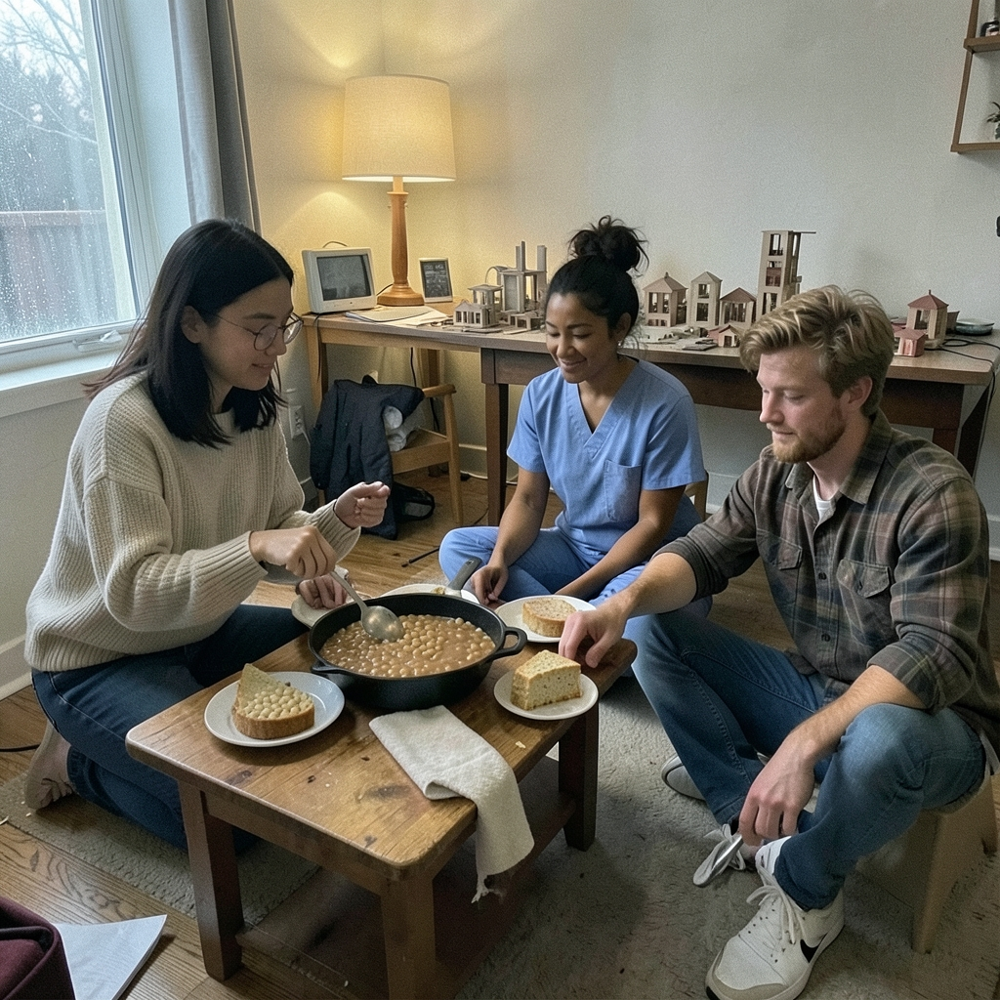
Maya · ArcFace 0.3081
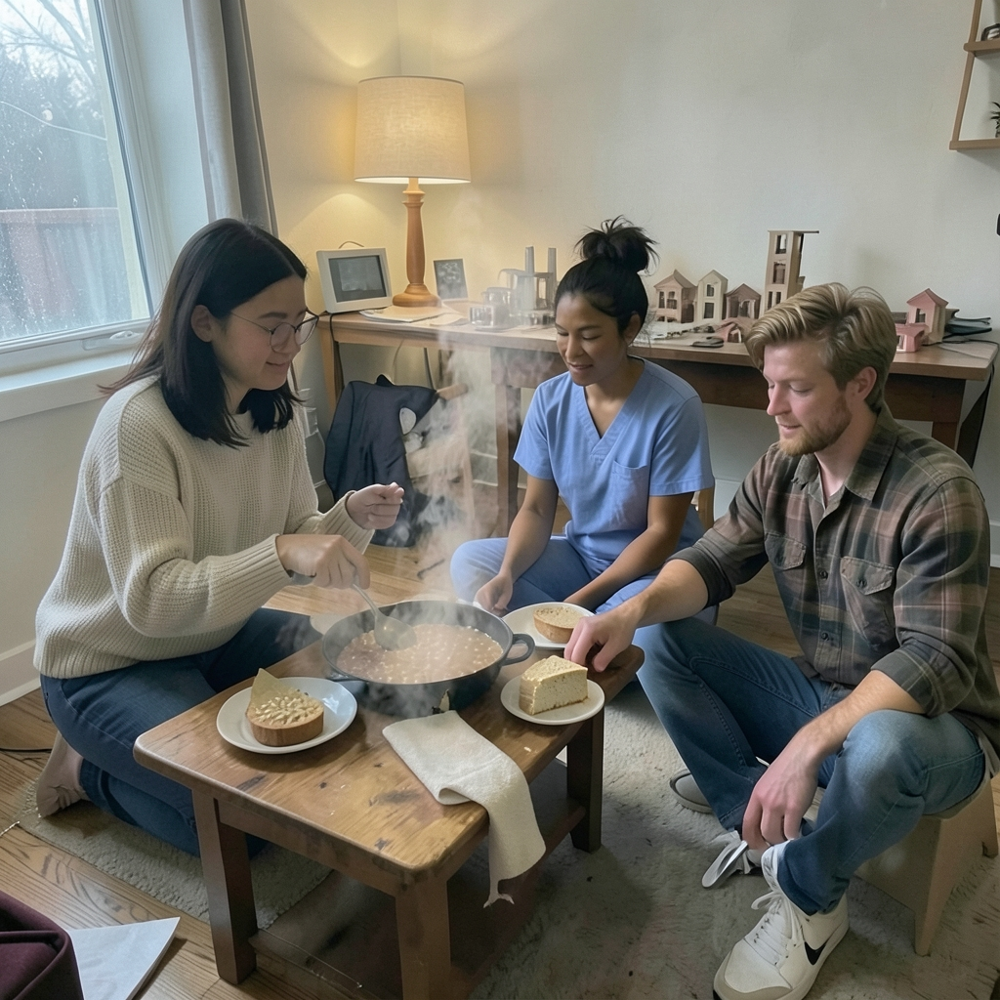
Maya · ArcFace 0.0618
| Target | Historical pilot · Pass 1 | Historical pilot · Pass 2 |
|---|---|---|
| Cast-iron skillet | Not scored | 0.36511 candidate(s) |
| Chipped blue mug | Not scored | 0.05422 candidate(s) |
| Target | Historical pilot · Pass 1 | Historical pilot · Pass 2 |
|---|---|---|
| Maya Chen | 0.3081face candidate 0 | 0.0618face candidate 0 |
| Priya | 0.0957face candidate 1 | -0.0874face candidate 1 |
| Jonah | 0.1880face candidate 2 | 0.1376face candidate 2 |
Earlier pilot preserved unchanged. Its starting image differs from the fresh controlled experiment.
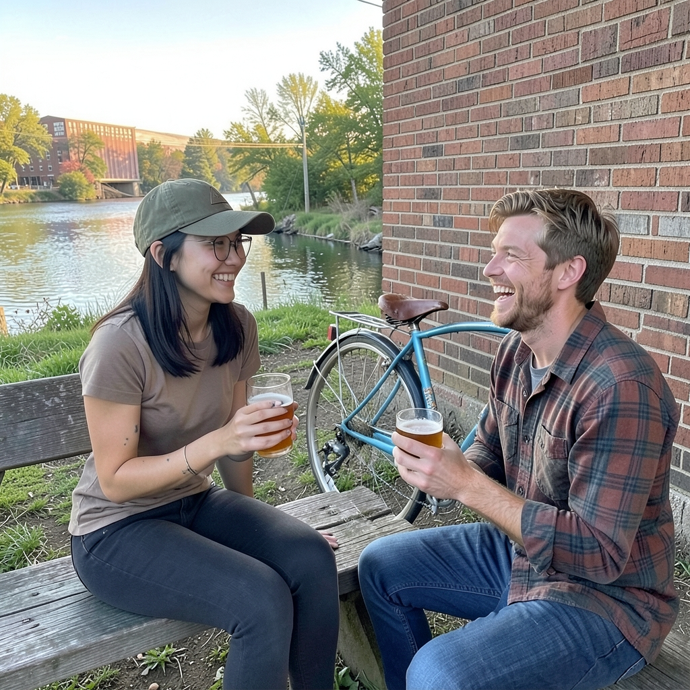
Maya · ArcFace 0.3098
| Target | Historical pilot · Pass 1 |
|---|---|
| Blue Schwinn bicycle | 0.51391 candidate(s) |
| Faded green cap | 0.34431 candidate(s) |
| Target | Historical pilot · Pass 1 |
|---|---|
| Maya Chen | 0.3098face candidate 0 |
| Jonah | 0.3027face candidate 1 |
Earlier pilot preserved unchanged. Its starting image differs from the fresh controlled experiment.
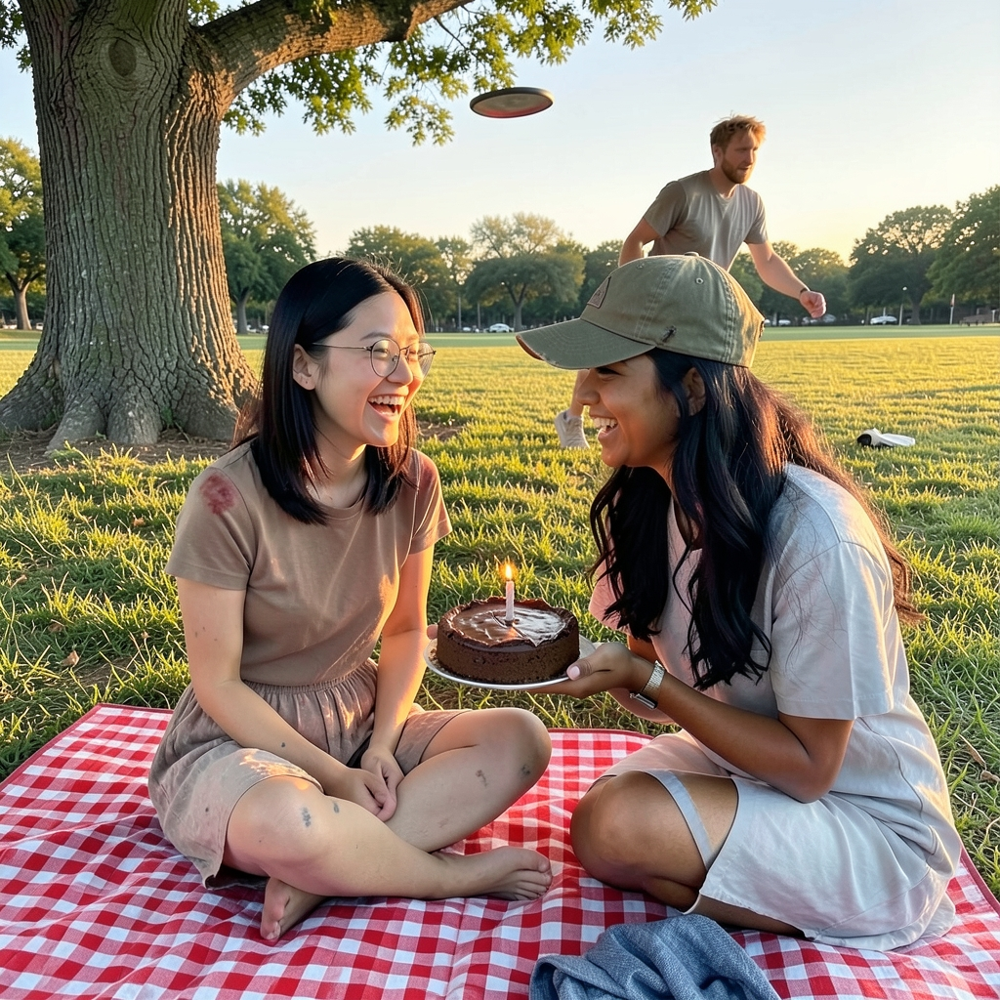
Maya · ArcFace 0.3418
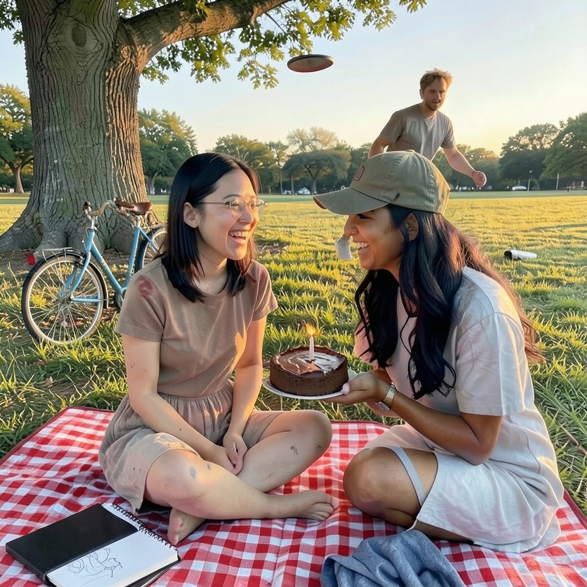
Maya · ArcFace 0.2231
| Target | Historical pilot · Pass 1 | Historical pilot · Pass 2 |
|---|---|---|
| Faded green cap | Not scored | 0.35691 candidate(s) |
| Blue Schwinn bicycle | Not scored | 0.51021 candidate(s) |
| Black hardcover sketchbook | Not scored | 0.29651 candidate(s) |
| Target | Historical pilot · Pass 1 | Historical pilot · Pass 2 |
|---|---|---|
| Maya Chen | 0.3418face candidate 0 | 0.2231face candidate 0 |
| Priya | 0.2019face candidate 1 | 0.0008face candidate 1 |
| Jonah | 0.0072face candidate 2 | 0.0234face candidate 2 |
Earlier pilot preserved unchanged. Its starting image differs from the fresh controlled experiment.
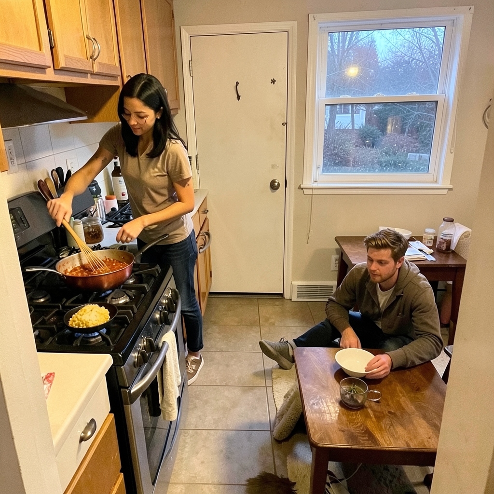
Maya · ArcFace 0.1091
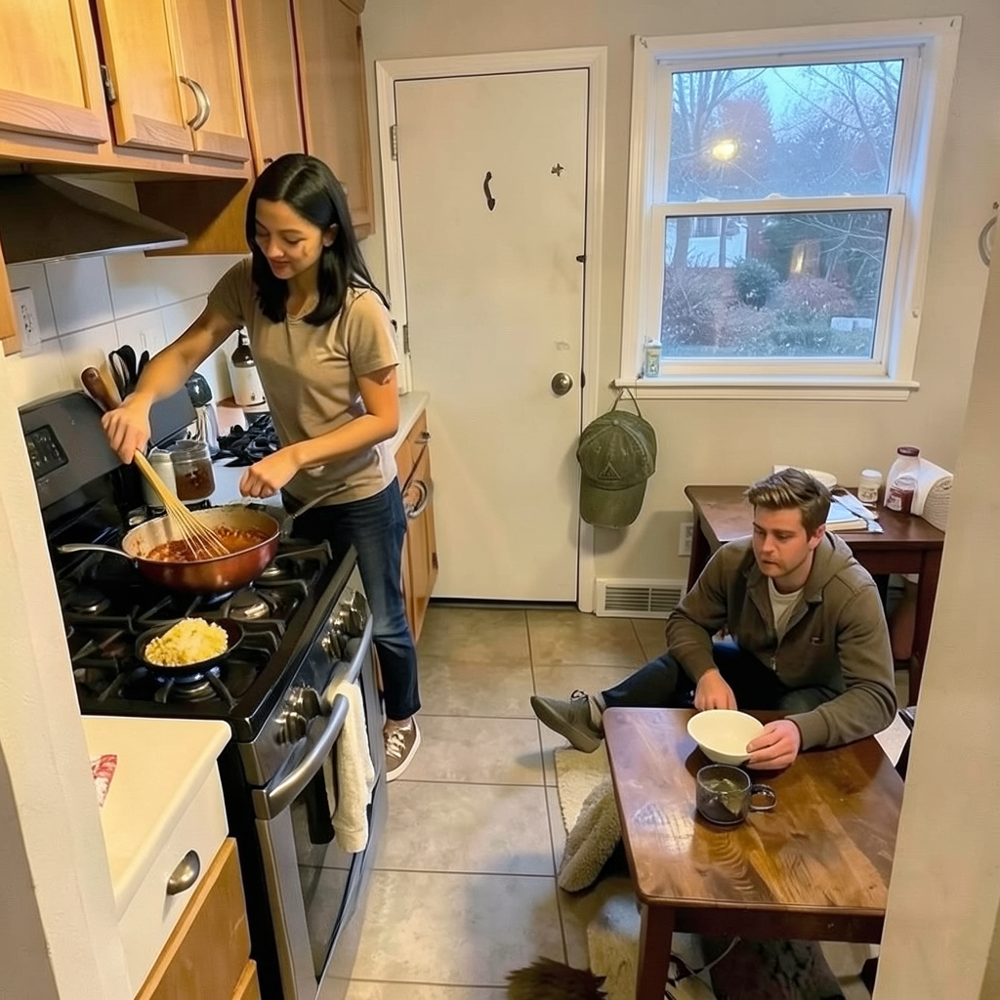
Maya · ArcFace 0.0575
| Target | Historical pilot · Pass 1 | Historical pilot · Pass 2 |
|---|---|---|
| Cast-iron skillet | Not scored | 0.44201 candidate(s) |
| Chipped blue mug | Not scored | 0.16092 candidate(s) |
| Faded green cap | Not scored | 0.47431 candidate(s) |
| Target | Historical pilot · Pass 1 | Historical pilot · Pass 2 |
|---|---|---|
| Maya Chen | 0.1091face candidate 0 | 0.0575face candidate 0 |
| Priya | —no assigned face | —no assigned face |
| Jonah | 0.1223face candidate 1 | 0.0111face candidate 1 |